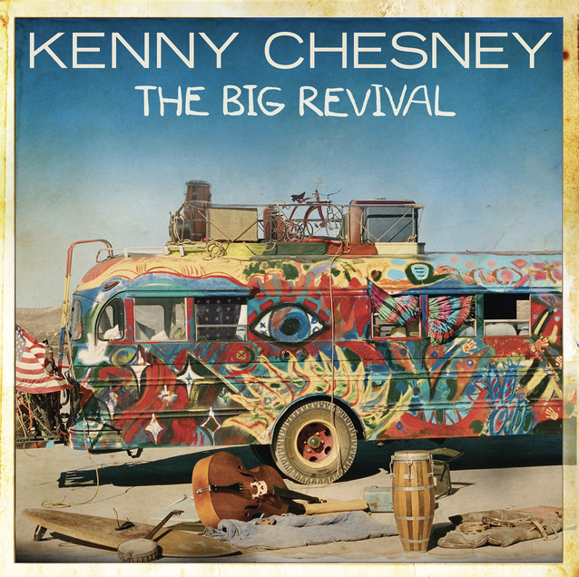

Introduction
After I played around with Suno AI in my last notebook, I knew that my initial exploration wasn’t even a scratch on the surface of all that the platform offered. Beyond its generation of music, lyrics, and harmonies, it also offers the user an AI-generated album cover for their new song. Throughout this blog, I’ve been the most fascinated by the generative art capabilities held by platforms like Microsoft Co-Pilot, so I wanted to dive more deeply into the covers Suno created while comparing them to both the real album cover and one generated by Co-Pilot using its Dalle-3 integration.
My process was to choose three songs from different genres that all had album covers that were not person-focused or too realistic. I prompted Co-Pilot with the same information I gave Suno, which was the first 1/3 or so of the given song’s lyrics, the song’s style– as I determined at my own discretion using both internet evaluations and my own opinions–, and the title of the song.
“You Broke my Heart” by Drake
I wanted to use a rap song as my prompt right off the bat to see how both AI platforms might react. This song is pretty explicit/heavy but its album cover offers a very different vibe, being light hues and depictions of angels, so I was excited to compare the real art to that generated by both platforms.
Suno Prompt:
Lyrics:
Yeah Yeah (Oh, baby, don’t go) (Don’t go) Look Look My notepad caught many bodies Screenshots solved plenty problems Voice notes bagged plenty hotties Can’t just talk to me like anybody Can’t just talk to me like anybody Man, you bitches know that I’m a somebody And lil’ baby bad, she got a Jung body Yeah, yeah, yeah, yeah Bunch of feelings I just couldn’t shake Disrespect that I just shouldn’t take You just couldn’t see the good in Drake Four months not a long time, but you fucked somebody, you just couldn’t wait You broke my heart, you broke my heart
Style:
Rap-sung trap music
Title: “You Broke my Heart”
Suno Response:
Co-Pilot Prompt:
Please generate album cover artwork for a rap-sung trap song called “You Broke my Heart” with the following lyrics : (same as those above, omitted here to save space).
Co-Pilot Response:
I’m immediately laughing at the sheer difference between Suno and Co-Pilot’s interpretation of the prompt!
- It seems like Suno is going to generally provide more basic covers, especially given that its focus is on the music it produces rather than the accompanying art.
- It’s funny that Suno was more accurate to the original art given its more basic, graphic style, but I think this is really just a result of the disjunction between the original song and the cover in terms of genre and lyrics.
- Co-Pilot seems to have run with many stereotypes of rap, being money, death, and alcohol (?), but I am curious as to why it would engage an art style so unlike most rap covers these days. Nothing is really ever this high-tech feeling, so this feels a bit off from the prompt.
- Good job to Co-Pilot for adding the Explicit/Parental Advisory warning on the cover! This is really true to form and I was impressed it replicated it so well.
“American Kids” by Kenny Chesney

Moving on from rap, I wanted to test out another genre that has a lot of stereotypical associations, being modern American country music. The album cover goes very directly with the content of the song, so I wanted to see if the AI platforms would produce art more similar to the true work in this test.
Suno Prompt:
Lyrics:
Doublewide Quick Stop midnight T-top Jack in her Cherry Coke town Momma and Daddy put their roots right here ‘Cause this is where the car broke down Yellow dog school bus kickin’ up red dust Pickin’ us up by a barbed wire fence M-tv on the RCA No A.C in the vents We were Jesus save me, blue jean baby Born in the USA Trailer park truck stop, faded little map dots New York to LA We were teenage dreamin’, front seat leanin’ Baby, come give me a kiss Put me on the cover of the Rollin’ Stone Uptown down home American kids Growin’ up in little pink houses Makin’ out on living room couches Blowin’ that smoke on a Saturday night A little messed up, but we’re all alright
Style:
Upbeat, contemporary country
Title: “American Kids”
Suno Response:

Co-Pilot Prompt:
Please generate album cover artwork for an upbeat, contemporary country song called “American Kids” with the following lyrics : (same as those above, omitted here to save space).
Co-Pilot Response:
Now we’re getting closer!
- I think because the tropes of American Country music are so niche (American flags, tractors, dirt roads, colorful + Americana-style), both platforms did a much better job at getting something close to the original artwork!
- Suno, while once again simpler, offered a realistic dirt road (note the “kicking up dust” line in the lyrics) scene, and I really liked it! I think it does feel a bit too vague to apply exactly to the words of the song, but it was a nice job.
- Co-Pilot really leaned into the stereotypes of the genre, but I didn’t mind it! The colors and energy at right, and I liked its attempt to incorporate the “kids” in from the song.
“Cold, Cold Man” by Saint Motel
As my final test, I decided to work with an indie pop song. This seemed to be somewhere in the middle of rap and country in my mind, so I wanted to see what the platforms would do.
Suno Prompt:
Lyrics:
Oh, my love I know, I am a cold, cold man Quite slow to pay you compliments Or public displayed affections But baby, don’t you go over analyze No need to theorize I can put your doubts to rest You’re the only one worth seeing The only place worth being The only bed worth sleeping’s the one right next to you You’re the only one worth seeing The only place worth being The only bed worth sleeping’s the one right next to you
Style:
Upbeat indie pop
Title: “Cold, Cold Man”
Suno Response:
Co-Pilot Prompt:
Please generate album cover artwork for an upbeat indie pop song called “Cold, Cold Man” with the following lyrics : (same as those above, omitted here to save space).
Co-Pilot Response:
Hmmm
- Honestly Suno went rogue with this one and I was kind of surprised. Maybe it ran with the word “bed” in the lyrics to make this grayish, vague room scene? It just doesn’t really fit the “upbeat” part of the genre.
- I’m also noticing that Suno seems to consistently produce art in the same semi-realistic, almost-blurred style each time. I was surpried it doesn’t offer just a bit more range.
- Co-Pilot killed it! Very colorful and in a graphic style. I could see this one actually being used by some indie group, and the “cold man” sitting atop the mountain was an interesting manifestation of the prompt. I was very excited about this one.
Conclusion
As expected, Suno is not yet as advanced in its art generation as Co-Pilot or human-creation. While this was a fun exercise, there wasn’t a ton of art produced that closely mimicked the original, though I really enjoyed seeing how LLMs responded to my prompting with their own creations. :)